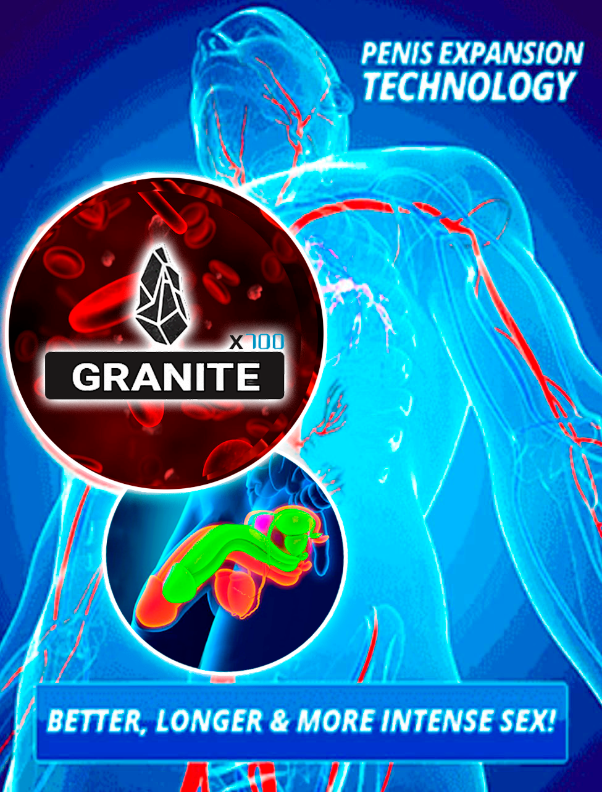

Publicado em - 10:44 AM
Uma Ereção forte e saudável aos 75 anos de idade é essencial: 60 gotas deste remédio podem curar a disfunção eréctil (não o Viagra)
Comecemos pelas estatísticas: vários estudos clínicos mostraram que 7 em cada 10 homens após os 35 anos de idade têm por vezes problemas na cama. Isto manifesta-se em perda total ou parcial da ereção, ejaculação prematura, diminuição da sensibilidade, incapacidade de ter relações sexuais completas.
A impotência masculina é a causa do divórcio, das querelas e das traições!
Hoje decidi abordar um tema muito sensível e importante - a saúde dos homens. Todos os dias recebo muitas perguntas sobre remédios modernos que podem restaurar a potência masculina.
Surpreende-me que estas perguntas sejam geralmente feitas por mulheres que querem ajudar os seus maridos a superar estas doenças graves.
Os homens tendem a não prestar muita atenção ao seu problema, e mesmo quando a necessidade de tratamento se torna aparente, eles não querem ir ao médico.
Compreendo-os, ninguém quer discutir coisas tão íntimas com um estranho, mesmo que se trate de um médico.
Portanto, hoje vou falar de métodos rápidos, seguros e discretos de restaurar a masculinidade sem visitas ao médico, drogas sintéticas e injeções dolorosas.

Infelizmente, é de notar que os homens modernos têm problemas íntimos cada vez mais cedo.
Os primeiros casos ocorrem já com a idade de 35 anos, por vezes até mais cedo. Se não cuidarmos da sua saúde, um homem acaba por se tornar impotente.
Os homens começam geralmente a usar VIAGRA, Cialis e outros análogos sintéticos depois de uma experiência negativa.
De facto, o Viagra e outros medicamentos similares garantem uma forte ereção, mas apenas por um curto período de tempo e com grandes efeitos secundários.
Estes medicamentos não têm cura! Portanto, um homem perde a confiança e não pode passar sem comprimidos mágicos, o que piora a sua saúde com o tempo.
Mas pode ter uma ereção em qualquer idade? Como se pode mantê-lo sem o material químico?
Todos conhecem as histórias de celebridades, homens velhos com amantes ou esposas jovens. Em tais casamentos nascem filhos, os homens estão sobre a lua e as suas esposas contam às suas namoradas sobre os seus sucessos na cama.
Como é que o fazem? O Viagra e outros medicamentos deste tipo ajudam-nos? Claro que não! Tive a oportunidade de fazer esta delicada pergunta a homens famosos e com eles conheci um espantoso remédio natural PX-300. Contém apenas ingredientes naturais. Ver algumas das entrevistas abaixo:
Ligação à página principal: Eládio Clímaco fala sobre como ele trata a disfunção eréctil num relatório exclusivo para o G1
Link para a publicação principal: Júlio Isidro revela que teve um ataque cardíaco devido à utilização de Viagra e revela a sua solução atual para a disfunção eréctil
Outros peritos também recomendam o PX-300, consulte-o:
 Link para o post principal: Dra. Tânia Graça revela a cura da disfunção eréctil ao vivo no programa
Link para o post principal: Dra. Tânia Graça revela a cura da disfunção eréctil ao vivo no programa
**Não se importam de relatar o seu problema passado, em vez disso, estão felizes por ajudar outros homens com uma cura para a disfunção eréctil..
Até recentemente, este suplemento muito poderoso só podia ser comprado a um preço elevado, mas desde o lançamento destas entrevistas, o preço caiu significativamente e tornou-se acessível a todos, enquanto a sua qualidade se manteve inalterada.
Em Portugal, foi possível iniciar um programa subsidiado.
O objetivo do programa: dar a cada homem uma oportunidade de se livrar dos seus problemas de masculinidade antes que estes se agravem, independentemente da sua situação financeira.
O PX-300 está disponível a um preço com desconto como parte deste programa!
A oferta especial é válida até !
Para vender o PX-300 em Portugal, levou muito tempo a realizar estudos laboratoriais para obter todas as certificações necessárias sobre a segurança e eficácia do suplemento.
(Eládio Clímaco e Júlio Isidro APROVAM PX-300)
Além disso, foram realizados estudos clínicos no Instituto Português de Urologia, que demonstraram excelentes resultados.
O PX-300 funciona realmente, mas ao contrário do Viagra, dá resultados duradouros. Agora vou falar-vos sobre os principais efeitos que podem esperar ao usar este medicamento./p>
1. Melhoria da ereção: excitação rápida, ereção estável durante o coito (até 2-3 horas).
2. Aumento da duração das relações sexuais: a relação sexual é significativamente prolongada até 2-3 horas. É importante se o homem vier rapidamente e a mulher não
3. Aumento do desejo sexual: Isto é importante para os homens idosos; o desejo sexual é despertado com mais frequência e significativamente
4. Qualidade do sémen: Isto melhora a quantidade e a qualidade do sémen.
5. Orgasmo intenso:: O orgasmo masculino torna-se mais intenso e agradável devido ao aumento da libido e da sensibilidade do pénis.

Perguntam-me frequentemente se é possível ter uma boa potência e uma ereção estável aos 50 anos de idade.
Sim, é claro! Na nossa era, uma vida sexual regular para os homens é a norma!
De facto, mesmo aqueles que têm mais de 60 anos podem restaurar a sua saúde masculina com a ajuda de remédios naturais, tais como o PX-300.
Com estas gotas, poderá ter relações sexuais durante muitas horas. Muito importante, este remédio é completamente natural e seguro e pode ser utilizado em qualquer idade.

Além disso, o PX-300 é útil para os jovens que têm problemas precoces na cama.
No seu caso, o problema situa-se a nível psicológico e é causado pela insegurança e falta de experiência. Depois de PX-300 terá uma forte ereção apesar do stress e da excitação!
Em suma, gostaria de apelar aos homens mais velhos que têm esposas jovens ou namoradas. Não negligencie os seus problemas de ereção!
Lembre-se que o sexo e a satisfação são muito importantes para as mulheres.
Se não fizer amor regularmente, os seus parceiros ficarão infelizes! Tornar-se um cornudo vai fazê-lo arrepender-se da sua inatividade.
Como posso saber se o PX-300 é adequado para mim?
Pode tentar várias soluções para tratar disfunções erécteis. Alguns envolvem tomar medicamentos com efeitos secundários perigosos, o que não é o caso do PX-300
.
Outros envolvem a injeção de medicamentos no pénis usando uma seringa.
Com tantas opções disponíveis, é normal que haja ceticismo quanto aos resultados.
Assim, em vez de prometer qualquer coisa aos nossos leitores, sugerimos que siga os passos de Eládio Clímaco e Júlio Isidro e experimente por si mesmo!
Assim que o PX-300 descobriu que o seu produto estava incluído neste relatório, insistiram em oferecer aos nossos leitores um desconto para experimentar o PX-300. Pode obter o seu desconto através do preenchimento do formulário de encomenda oficial.
Para todos os homens, o nosso produto está disponível a um preço com desconto! A oferta especial é válida até:


Comentários de clientes
6 cm num mês!
O pénis pequeno era frustrante para mim. Era sempre suave, as mulheres sorriam-me com pena, eu não tinha confiança, não podia satisfazer o meu parceiro... para citar alguns dos meus problemas. Quando experimentei o PX-300 , soube imediatamente que nenhuma mulher voltaria a rir-se de mim. Graças a este método, de um dia para o outro comecei a fazer as raparigas gritar de prazer quando sentiram a minha enorme pila. Este é o aspeto do PX-300 :

Eu tinha medo de sexo.
Eu estava desesperado, tinha 29 anos e um pénis de 12cm. As raparigas achavam-me atraente, mas quando chegou a hora de ir para a cama, eu era um falhado. No dia seguinte, fingiam que não me conheciam. Tudo isso mudou quando comecei a utilizar este método. Eu mal estava a meio e eles já estavam a gemer de prazer. Tive medo que os meus vizinhos nos ouvissem porque estavam muito barulhentos. O meu pénis cresceu oito centímetros e ficou mais grosso. Em suma, este produto devolveu-me a minha autoestima.
Roberto, Lisboa
(APLIQUE AGORA ANTES QUE O TEMPO SE ESGOTE)
 Quantidade em stock:
quase esgotada. Desconto especial ainda disponível até : -
Quantidade em stock:
quase esgotada. Desconto especial ainda disponível até : -


DESCONTO ESPECIAL
DESCONTO ESPECIAL inda está disponível até: -
Clique aqui para encomendar o seu PX-300 e obter o DESCONTO ESPECIAL para aumentar o seu pénis em 6,35 em 30 dias!
Comentários: (47/47)
Fui diagnosticado com mastopatia. Para além da medicação, o médico recomendou uma atividade sexual regular. Mas acabou por não ser assim tão fácil de fazer. Não estou a dizer que não queria, mas o meu marido teve problemas de ereção. Não fazíamos sexo mais do que uma ou duas vezes por mês. Falei-lhe da recomendação do médico e decidimos fazer amor mais vezes, mas ele não o conseguiu fazer. O meu amigo recomendou-me o PX-300 e eu comprei-o através do formulário de encomenda oficial. O meu marido começou a tomá-lo imediatamente. Agora não dormimos só à noite :) Há muito que esqueci a sensação de felicidade absoluta! Recomendo-o a todos. Usar produtos naturais, não sucata química!
O meu marido e eu costumávamos fazer sexo regularmente, 3 vezes por semana ou até mais vezes. Mas de repente vi que aquele marido estava a tomar Viagra! Consegue imaginar isso? Ele não me disse nada! Eu pensava que ele era diferente dos outros homens e a sua idade não o tinha mudado nada! Eu proibi-o de o utilizar. Tinha frequentes dores de cabeça e flutuações da pressão arterial! De que serve a satisfação na cama a um preço tão elevado? Começámos a procurar remédios naturais e encontrámos o PX-300, muito obrigado por nos falar sobre este valioso produto! E também havia uma oferta especial no website, o que significava que tínhamos ainda mais sorte! Comprámo-lo a um preço com desconto! O meu marido melhorou a sua saúde masculina, na minha opinião ele não teve uma ereção tão forte mesmo quando era jovem. Já o utilizamos há seis meses. Não há problema!
Não pude deixar de responder a este comentário ... Maria, devias ter-me dito mais cedo! Nem imagina como fiquei feliz pela sua família que estava a desfrutar da vida e a obter satisfação. Como salientou, não há necessidade de tomar toneladas de comprimidos e danificar o seu coração com Viagra. Estou muito contente por ter tocado neste tópico muito importante, dado o número de comentários, não o fiz em vão e a questão é muito atual. Gostaria de reiterar que matar o seu corpo com resíduos químicos não é uma boa ideia,
Atenciosamente, Glória.
Utilizámos este produto há anos atrás quando o meu marido teve problemas de ereção pela primeira vez. Comprámos um pacote de PX-300 quando fomos de férias para a Alemanha. Lamentamos ter comprado apenas um pacote porque os resultados excederam as nossas expectativas!
Provavelmente todos conhecem a minha história. Muitos websites escreveram sobre mim. Gostaria de agradecer a Tânia, que falou a todo o mundo sobre este poderoso remédio. Claro, escrevi um artigo sobre estas gotas no meu blogue, mas não é muito popular. Resumindo, tenho 60 anos de idade e casei com uma bela rapariga de 26 anos! Fiquei muito feliz, mas depressa percebi que não a conseguia satisfazer na cama. Uma jovem mulher não pode viver sem sexo. Mas o PX-300 salvou o nosso casamento. Agora sinto-me como um leão! UM HOMEM REAL! E sim! sou muito mais forte na cama!
PX-300 é um bom medicamento. O meu amigo recomendou-mo quando lhe disse que não podia ter sexo sem Viagra. Ele ficou surpreendido por eu precisar de um estimulante, pois não tenho 70 anos de idade. A minha ereção recuperou e fortaleceu-se realmente. Espero que seja para sempre ;) Não espere por um milagre, encomende enquanto ainda está disponível e a um preço especial!

Encomendei o PX-300 no site oficial, o efeito é forte e duradouro. Espero que não desapareça! Gostaria de dizer a todos os que querem comprar que este medicamento não é como o Viagra, é completamente natural, por isso é necessário fazer um curso para obter o efeito. Mas este efeito é ótimo!
Comecei a tomar o PX-300 m segredo, não queria dizer à minha mulher que estava a ter problemas. O efeito foi ótimo! Sim, a ereção foi rápida e muito poderosa! Imagine a surpresa da minha mulher, ela conhecia-me há anos! A relação melhorou tanto, que a minha mulher está a enlouquecer! No início ela só podia atingir o clímax se eu lhe tocasse, agora só vem do seu pénis! O meu desempenho não foi tão bom como eu pensava que seria...
Ricardo, eu notei a mesma diferença com o meu marido. A diferença era óbvia. Toda a minha vida pensei que o sexo não era para mim... Mas não! Agora todos os meus orgasmos são incríveis, enquanto que antes quase nunca ejaculava. Agora peço ao meu marido para fazer amor, às vezes tenho vergonha desta luxúria.
Gostaria também de contar a minha história. A minha ereção foi restaurada, comecei a desfrutar da vida e deixei de me preocupar com o envelhecimento. Uma pessoa tem de permanecer humano. É um facto. Se não gosta da vida e não satisfaz o seu parceiro, porquê viver?

Estou surpreendido, o pénis é duro como uma rocha! Há alguns dias, tive uma maratona sexual com a minha namorada. Passámos 3 horas na cama. Com pequenas pausas :) Eu ejaculo três vezes! Também reparei que o tempo de recuperação se tornou muito mais curto, após 5-10 minutos estou novamente pronto! Obviamente, se houver uma bela rapariga ao seu lado. Até este pensamento me preocupa, talvez hoje tenha de ir para casa mais cedo.
Tive medo de todas essas drogas porque depois do Viagra comecei a ter problemas cardíacos. Mas depois tive a coragem de o experimentar porque é um produto natural. Vi no website do fornecedor que havia uma oferta especial, por isso não me custou quase nada. E de facto, a minha cabeça não dói, o meu coração não bate tão forte como quando toma Viagra. Recomendo-o, a duração e resistência de uma montagem com PX-300 é 100 vezes melhor do que o Viagra!

Ajudou realmente o meu marido! Ele teve problemas durante anos e nada nos ajudou. Esteve sempre deprimido. Agora a sua ereção está boa e o meu marido parece um homem novo, ele é activo e alegre! Obrigado por este efeito!
Obrigada, PX-300 salvou a nossa família! E é muito barato. O Viagra, por outro lado, é muito caro, gastamos muito dinheiro com ele.
Pode dizer onde o comprou? Não está disponível nas farmácias. Eu não gostaria de comprar uma falsificação para não piorar a minha saúde.